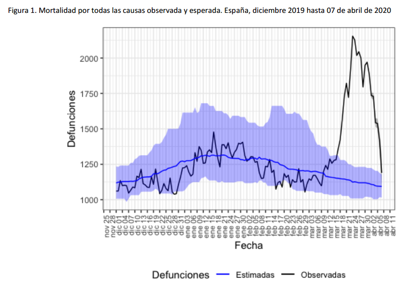

personal projects and recommended links, considering that...
- "essentially all models are wrong, but some are useful". Box G. et al.
- "explicit better than implicit". The Zen of Python et al. (with exceptions).
I expect models being wrong, but their assumptions explicit.
New COVID-19 sections, with:
- Context on confirmed cases vs estimates, mortality(10/04/2020)
- Simulations with Epidemic Calculator
- Last updates: cases by age(26/04/2020), data sources(18/04/2020)
Feedback welcome!
Content layout based on
startbootstrap-resume.
Custom charts generated with Plotly Express.
COVID-19
Estimates and Context. Language matters
Confirmed cases are only a (generally small and biased) subsample of actual infections. How small and how biased? It depends on the testing resources and protocols applied in each country/region.
How many people could be actually infected all around? Estimations have been done by different models and analysts. For instance, the following values have been reported by the Imperial College London COVID-19 Response Team
According to this model, Spain could have around 15% of infected population as of March 28th. But the 95% credible interval provided was between 3.7% and 41%. So the uncertainty is still huge! However, even the lower bound of the estimation corresponded to almost 2 million people. Almost 30 times higher than the number of confirmed cases in Spain at that date (72K).
Kiko Llaneras et al also published at elpais.com 4 different calculations, from different researchers and models, ranging from 150K to 900K expected infections in Spain at March 24th. When confirmed cases were below 40K according to Spanish government.
üîé¬øCuántos infectados hay realmente en Espa√±a? Seguramente cientos de miles. Repaso cuatro cálculos sencillos pero orientativos que arrojan cifras del orden de 300.000 o 900.000 casos: https://t.co/cACMrd9MHY
— Kiko Llaneras (@kikollan) March 25, 2020
While the estimations of Imperial College have been broadly communicated in mass media, often ignoring the main assumptions and confidence intervals underlying the gross numbers, I think data team at elpais.com, and specially Llaneras is doing a god job on communicating the numbers but also contextualizing assumptions under these numbers.
Anyhow, numbers from confirmed cases and notified deaths per country, and alternative estimates of actual infections and deaths infered by different studies and models should be understood under their context. Language should be used rigourously to avoid misinformation.
I personally recommend analysis and data curated by Our World in Data. Thanks to Max Roser et al. I also appreciate their effort to persuade general press to use adequate terms. And to promote curated analysis from different sources:
The study from Timothy Russell and coauthors estimates that only 5.8% of all symptomatic cases in Italy are reported.https://t.co/d5eRoOltBj
— Max Roser (@MaxCRoser) April 1, 2020
Let’s hope Italy is bending the curve.
But reported cases don’t tell us much when they are likely only a small fraction of the total. pic.twitter.com/QvvRtzyzVA
Additional info (Spanish):
Como veo que hay mucho lío con las cifras de casos y muertes por coronavirus, ("vamos mejor o peor que X país", "el gobierno de X país miente", etc.), abro hilo explicativo para intentar que se entiendan mejor los conceptos. #COVID19 pic.twitter.com/T2CllkjbUV
— Carlos Fernández (Mejor Prevenir) (@pezcharles) March 30, 2020
Moreover the number of confirmed and notified deaths is also an estimation of actual deaths caused by the virus. And specially in some countries/regions this value could be highly underestimated. Statistics on mortality monitoring on all causes, as project EuroMomo does, can be useful to infer alternative (and better) estimates based on excess mortality. This project was launched in 2008 and it uses data from a network of 29 partner Institutes from 26 countries. They have accessible maps with weekly estimated deviations from the baseline (z-scores) from week 1 of 2010 up until today. And charts with disaggregated data by country and age range for the past 4½ years.

Despite the dramatic situation in many places, differences are still huge even for regions in the same country.
For instance, the following charts belong to the
Spanish MoMo report (April 7th):



We can observe excess mortality has been yet dramatically huge in the second figure representing the Region of Madrid. However the third figure represents Canary Islands, where the first case in Spain was diagnosed. And it shows the impact on mortality in this region has been much lower.
Fortunately, after the hard confinement measures decreed by the Spanish Government, both regions have current estimations of Basic Reproduction Number (R0) at April 7th near or under 1. According to official estimates by the Spanish Ministry of Healthcare, R0 estimates would be 0.99 for Madrid and 0.71 for the Canary Islands.
MoMo project in Spain collects information of aproximately 4K civil registers, with a coverage of the 92% of the Spanish population. Estimates of expected mortality are based on historical averages of observed mortality since January 1th 2008 until one year before the current date. This information has been published in reports in PDF format. Buth they have recently developed also an interactive dashboard with access to historical data in CSV for the last 2 years.
Next figure published by elpais presents both the number of deaths registered by MoMo and deaths confirmed with COVID-19 until April 2th in the 17 regional autonomies of Spain.

Despite this chart doesn't show the excess mortality estimates by MoMo, but the total number of deaths, we can see that confirmed COVID-19 deaths at april 2th in Madrid or Catalunya are even higher than the total number of deaths registered in these regions until April 7th. Whereas in Castilla y León and Castilla La Mancha, where high ratios of excess mortality have been detected, the reported COVID-19 deaths have been significantly lower.
Due to the latency in collecting this kind of data conclusions have to be read with caution. In some regions latency on notification would be higher than usual due to saturated Civil Registers. Curiously, the excess mortality estimated by MoMo at April 5th (12940) approximates a lot the 12418 COVID-19 confirmed deaths at country level at the same date.
It seems that COVID-19 virus (SARS-CoV-2) could be less lethal in relative terms than current figures we get in Italy or Spain (estimated deaths/estimated infections would be lower than confirmed deaths/confirmed cases). Though much more contagious than we expected. So much more lethal in absolute terms. With the aggravating circumstance of saturating healthcare systems and increasing even more the number of direct and indirect deaths caused.
In April 4th report by CCAES (Center of Alert Coordination and Healthcare Emergencies), a public institution from the Spanish Ministry of Healthcare, says that mortality between overall infected population could be between 0.3% and 1%. They refer to an article published on The Lancet by Anderson RM et al . This is coherent with situation on Iceland where massive testing has been performed. Otherwise lethality on hospitalized cases was estimated on 14% at the beginning of the epidemy, according to a study by Wu P. et al in Wuhan, dated January 23th.
Analysis: Confirmed Cases by Age Groups
The number of confirmed cases in Germany at April 26th is around 157K people, whereas there are around 226K confirmed cases in Spain (Johns Hopkins University, worldometer). But relative lethality estimates by COVID-19 on Germany seems below 4% (confirmed deaths / confirmed cases). Much lower than figures in Spain (10%) or Italy (13%).
There are several aspects than could explain this big difference. But I will focus on the representativity of the sample of confirmed tests in relation to the overall population. If we compare the distribution of confirmed cases by age groups in Spain and Germany we can see that:
- In Spain confirmed cases are biased to ranges of older people. While young people would be underrepresented.
- In Germany we have just the opposite effect. Though their distribution of confirmed cases is more similar to the overall distribution, people from 60 to 79 would be slightly underrepresented, while age group of 35 to 59 would be overrepresented among confirmed cases.

Code.
Thanks to datadista, Robert Koch Institute and plotly.
Related chart, considering both age and sex groups in Spain:
At the begining of the crisis South Korea was the country with a higher number of tests performed and a more representative sample in terms of age distribution. Currently, according to Our World in Data, Iceland has performed much more tests per capita. Furthermore is a reference on data transparency.
According to the number of confirmed cases and deaths with COVID-19 on Iceland, relative lethality for those tested positive could be below 1%. Actually at the time of writing is only around 0.5% in that country. Moreover, data from Iceland is helping to get more educated guesses on the proportion of asymptomatic infected people. Estimates published on April 14th on Spread of SARS-CoV-2 in the Icelandic Population, report that "43% of the participants who tested positive reported having no symptoms, although symptoms almost certainly developed later in some of them.". Though these estimations have to be read also with caution as the effect of false positives should be taked into account.
Additional related information, though less updated:
Here is a distribution of recorded Covid-19 cases in Iceland (which tests broadly, even people with no symptoms) and the Netherlands (which tests narrowly, only those with severe symptoms) pic.twitter.com/v92fVvOHrT
— Alexandre Afonso (@alexandreafonso) March 27, 2020
Germany vs South Korea vs Italy, published on March 13th in Medium by Andreas Backhaus:

Simulation: Epidemic Calculator
This simulator implements a classical infectious disease model: SEIR (Susceptible → Exposed → Infected → Removed) [Wu, et. al, Kucharski et. al]. The model uses 13 parameters, including Mortality statistics and the Basic Reproduction Number (R0) before and after the Intervention day.
I tried to adjust the evolution of confirmed deaths (Fatalities) in the Region of Madrid since the day this number was over N=10. Displacing Intervention day relatively to this reference. And ignoring the Day 0 as time origin.

Concretely, the number of reported deaths on the Region of Madrid at 14th March, when the Spanish Government decreeted the state of Alarm, was 213. While only 7 days before, the number was 16. And 3 weeks later this number increased from 213 to 5136, according to covid19.iscii.es data.
I used 1% as Mortality Statistics and 10 days for Tinf (Duration patient is infectious). And in order to fit the evolution of confirmed deaths R0 was established to 3.9 before the intervention and 1.0 after the intervention.
I think the model is useful to have an idea of the interconnected variables and effects. But results from this model should be read with caution. Moreover, appart from the uncertainty introduced by many different estimated parameters and hidden variables, this implementation of SEIR ignores the effect of the healthcare capacity system, and the possibility on mortality increase due to ICU bed shortage.
Thanks to Gabriel Goh epcalc project.
COVID-19 Datasets
- Data from Spanish government made accesible on CSV by @datadista
- Mortality by all causes (MoMo), Spain. 2 years of historical data. Daily updates
- COVID-19 in Iceland – Statistics
- The COVID Tracking Project (US)
- Data related to COVID-19 available at AWS Data Exchange
- Google COVID-19 Community Mobility Reports
- PCR tests performed by the Autonomous Communities of Spain that communicate these data. By Civio Datos (Spanish)
- Coronavirus COVID-19 Global Cases by the CSSE at John Hopkins University
- Worldometer. Confirmed Cases and Deaths by Country, Territory or Conveyance
- Official Update of COVID-19 Situation in Singapore
- Our World in Data. Coronavirus Disease (COVID-19) – Statistics and Research
- EuroMomo: European Monitoring of Excess Mortality for Publich Health Action
- Report 14: OnlineCommunity Involvement in COVID-19 Research & Outbreak Response. Pristera P. et al. Imperial College
- Nowcasting and forecasting the potential domestic and international spread of the 2019-nCoV outbreak originating in Wuhan, China: a modelling study. Wu J.T. et al. The Lancet. Jan 31,2020
- Spread of SARS-CoV-2 in the Icelandic Population. Gudbjartsson D. et al. The New England Journal of Medicine. April 14th.
- Statistical information for the analysis of the impact of the COVID-19 crisis / Mobility Data. By Spanish INE. With collaboration of the three main mobile operators in Spain (Orange, Telefonica, Vodafone)
Spanish only:
- Así evoluciona la curva del coronavirus en España y en cada autonomía (elpais.com)
- Vigilancia de los excesos de mortalidad por todas las causas. MoMo (Situación a 7/4/2020)
- Informe sobre la situación de COVID-19 en España. 3 abril 2020. RENAVE. CNE. CNM (ISCIII)
- Información científica-técnica. Enfermedad por coronavirus, COVID-19 (mscbs.gob.es, 4/04/2020)
- Razones (fundamentadas) por las que España no está haciendo esos 20000 test PCR al día (El Confidencial, 3/04/2020)
- Sin medios contra el coronavirus: cómo España intentó huir a ciegas del "tsunami" (CIVIO, 8/04/2020)
Other topics
Car Behavioral Cloning
Deep Learning: Agárrate que vienen curvas / Hold on come curves
Custom workshop materials on Deep Learning and classical Machine Learning applied self-driving car simulator. Based on Udacity CarND Behavioral Cloning Project and the NVIDIA Convolutional Neural Network model
 Code
Code
{kind=link}
Thanks to UDACITY, Nvidia, Keras and Naoki Shibuya first implementation of car-behavioral-cloning project. And also to my colleague Rafa Castillo and the ICEMD.
Hackathons & Demos
Diversifynd
Diversifynd is a platform that supports diversity.
Users can check which events or organizations have a better degree of representation in term of gender or race. For this purpose computer vision is applied to images of these events or organizations. By traning our custom model.
Developed by TheAlfredoLambdas (magnificent) team. Thanks also to Tensorflow/serving, FaceNet and a project by Zhu Yan And also heroku, azure, docker...
Augmented Choices
Augmented Choices: Personalized and Gamified Trip Experiences with Augmented Reality.
Developed by TheAlfredoLambdas (splendiferous) team. Thanks also to Minube API, Oracle Cloud Platform Container Service, Hotelscombined API...
Berlin & Berlout
Could you get into a berlin exclusive nightclub? Berlout tells users if they fit the admission criteria for Berlin clubs: dark clothes, no jeans, no more than 3 people, around 30s, no laughing, no drinks... You only have to take a picture. And computer vision algorithm identifies elements related with your probability of being rejected. You will see what clubs you could enter with more chances according to this evaluation.
Team work. Thanks to Jesus Martín and the rest of the (marvelous) team! Thanks also to Microsoft Azure Cognitive Services, and Techcrunch, and the unicorns...